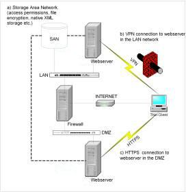
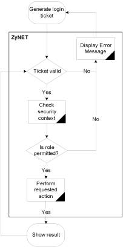

Security
Securities can be set on different levels on the folders (NTFS Security), documents (Document Security) or functionalities (Functional Security). Also, using Audit Trail, all user actions can be logged.
Basic (NTFS) Security can be divided in
- Standard NTFS Security and
- ZyLAB NTFS Security.
Standard NTFS (Windows New Technology File System) Security provides performance, security, reliability, and other advanced features, such as file and folder permissions, encryption, disk quotas, and compression. You can enhance this security with File System (Network) Security (page 199).
Document (Repository) Security (page 207)
Functional (Application) Security (page 216)
Audit Trail (page 190)
Standard Security
ZyLAB supports standard
VPN (Virtual Private Network)
Http (no firewall issues)
Secure Https (HTTPS)
SAN (Storage Area Network, use mounted drives)

Direct disk access is not required:
- A storage area network (SAN) device can be used for (secure) storage of files;
- a virtual private network (VPN) connects outside users to the internal LAN; and
- a HTTPS connection can provide a secure connection to a Webserver in the demilitarized zone (DMZ).
User Authentication
Windows authentication
- ZyLAB Webserver: IIS Integrated or Basic Clear Text Authentication
- ZyINDEX, ZyFIND, etc.: Windows logon
ZyLAB authentication
- ZyLAB Webserver only
- Standard use of SHA1 (Secure Hash Algorithm 1 (see Glossary > Hash code)) to communicate and store password hash:
- Create a fingerprint from every document/file in the ZyLAB System (ZySCAN Export, Upload Webserver).
- Use secure http (https) to achieve a higher level of security
|
Basic Web Login
|
- Webclient login page prepares a login request
- Server processes request:
- Authenticate user
- Set security context
- Check if requested action is permitted
- Server determines the user role
|

|
|
Advanced Web Login
|
|
Features:
- Single point of logon
- Domain user authentication
- No NTFS permissions required
Advantages:
- Integrated windows authentication
- Better support for NAS and SAN*
- Restricted access to XML based Information store
* ZyLAB Webserver runs anonymously under a standard user and is able to retrieve files from other files servers while the user was authenticated using challenge response
For more information, see ZyNETLogin (page 175).
|

|